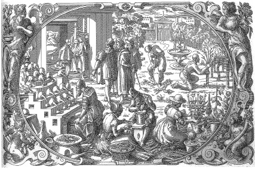

ŞEKİL 12. Simya ve kimya, ilaçların elde edilmesinde eczacılığa yardımcı olmuştur. Burada şifalı bitkilerin ekim, yetiştirme ve hasadı sergilenmiştir. Bu bitkilerin etkili kısımları havanda dövülmekte ve solda görülen fırının üzerinde doğrudan ya da su veya alkolle karıştırıldıktan sonra damıtılmaktadır. Arka planda sol tarafta yakınları ile birlikte görülen hasta, kendisine yardımcı olacak hekimi beklemektedir [Christoph Wirsung (1500-1571), 1592].3
Ortaçağın en önemli ve resimlerle bezeli farmakognozik bitkiler kitabı, 12. yüzyılda ortaya çıkan Liber de simplici medicina’dır (Basit İlaçlar Üzerine Kitap). Kitabın metni “Circa instans...” sözleri ile başladığından, bu eser daha çok Circa instans adı altında tanınır. Eserin yazarı, Salerno’da yetişen Matthaeus (ya da Johannes) Platearius-II (12. yüzyıl) olmalıdır. Bu elyazmasında basit ilaçlar, günlük uygulamalar için betimlenmiştir. Leipzig Üniversitesi Kütüphanesi’nde korunan bir Circa instans elyazmasında 342 ilaç yer almaktadır.32
Salerno Tıp Okulu 995-1250 yılları arasında parlak dönemini yaşamıştır. Alman İmparatoru ve Sicilya Kralı II. Friedrich (1194-1250) 1241 yılında yayımladığı “Salerno Buyruğu” (Lat. “Constitutiones”, Alm. “Edikt von Salerno”) ile Güney İtalya ve Sicilya’da eczacıların uyacakları hükümleri belirlemişti. Bu buyrukla hekimlerin eczane sahibi ya da ortağı olmaları ve bizzat ilaç satmaları yasaklanmış, ilaç fiyatları yasal yollarla belirlenerek haksız fiyat artışları önlenmeye başlanmış, hekimlik ile eczacılık meslekleri ve bunların öğrenimleri hukuksal olarak ve kesin şekilde birbirinden ayrılmış, böylece eczacılık, tıptan bağımsız olarak kendi gelişme yoluna koyulmuştur.27
Yüksek Ortaçağ’da (11.-12. yüzyıllar) çok sayıda Arapça tıp ve eczacılık eseri Latince’ye çevrilmiş, bu arada pek çok Arapça tıbbî-farmakolojik terim de Latinceleştirilmiş ya da çevriyazı (transkripsiyon) ile biçimlendirilmiştir. 13. yüzyıl sonu ile 14. yüzyıl başlarında kullanımda olan sözlük şeklindeki önemli eserleri arasında Cenova’lı Simon’un Yunanca-Arapça-Latince ünlü sözlüğü Clavis sanationis (Sağlığın Anahtarı), anonim bir tıbbî botanik sözlüğü olan Alphita ile Matthaeus Silvaticus’un Liber pandectarum medicinae bulunuyordu. Ascoli’li hekim Saladin Ferro’nun (15. yüzyıl) 1450 yılı dolayında kaleme aldığı Compendium aromatoriorum adlı eser, olasılıkla eczacılar için ilk ders kitabı niteliğindedir.
Romalılar ellerine geçirdikleri bölgelerde bulunan mineral suyu kaynaklarını sistemli olarak geliştirmişlerdir. Avrupa’daki tanınmış kaplıcalardan Aix-en-Provence’taki (Aachen) “Aquae Sextiae” ve “Aquae Granni”, Vichy’deki “Aquis Calidis”, Baden’daki “Aquae Helveticae”, Baden-Baden’daki “Aquae” ve Wiesbaden’daki “Aquae Mattiacae”, bunlardan kimileridir.6
Ortaçağın başlangıcında Avrupa’da pislik egemendi. Kentler pisti, hamam ve tuvalet yoktu ve bedeni temizleme geleneği oluşmamıştı. Daha sonraları kent ve kasabalarda belediye hamamları açıldı. Buralarda su ve buhar banyosu yanında yemek, müzik, eğlence ve giderek fuhuş yapılmaya başlandı. Böyle hamamlar 15. yüzyılda frengi salgını sonucunda gözden düşerek kapandılar. 18. yüzyıldan başlayarak çevre ve beden temizliğine önem verildi.
Şifalı otlar, hastalık tedavilerinde yüzyıllar boyu kullanılmaya çalışılmıştır. Haçlıların Doğu ile temaslarında şifalı otlar konusundaki bilgileri artmıştır. 15. yüzyıl başlarında, hattâ daha da önceleri Viyana gibi büyük kentlerde eczaneler bulunmaktaydı. Oralarda çeşitli maddelerin yanı sıra biber, safran, zencefil, kuru karanfil, tarçın, badem, muskat, günlük (günnük, sığla; Lat. “Liquidambar orientalis”), kimyon, şeker, pirinç, zeytinyağı, incir, üzüm, sabun, mum ve alçı, ama ayrıca da kükürt, şap, kâfur / kâfuru, göztaşı (bakır sülfat), tiryak, mastik sakızı / mesteki sakızı / damla sakızı da bulunurdu.35
Charlemagne’ın Bağdat Halifeliği ile kurduğu iyi temaslar yoluyla, pek çok Avrupalı hasta, yalnızca nadir (bu nedenle de pahalı) Arap bitkilerinin, hastalıkları iyileştireceğine inanır duruma geldiler. Kimi Avrupalı rahipler, Alman ülkesinin şifalı bitkilerinin de şifa vereceğini bildirdiler. Örneğin bağırsak kurtlarına karşı kırmızı renkte bir çayır çiçeği, kısamahmut otu (“Teucrium chamaedrys”), sinirotu (“Plantago major”) ve salep otu (“Orchis hircina”) karışımını önerdiler. Ancak bu bitkiler bir Perşembe günü ve ay batımı sırasında toplanmalı (!), toplanan bitkiler bir havanda dövülmeli, az miktarda su eklenerek karıştırılmalı, bir keten bezi aracılığıyla bastırılarak süzülmeli ve ele geçen sıvı, günde bir kez, kurtlar düşürülene dek aç karnına içilmeliydi.35
Tıp ve eczacılar loncasının koruyucu velileri olarak Batı’da Cosmas ve Damian geçerlidir. Bunlardan Cosmas hekimlerin, Damian ise eczacıların koruyucu velileri sayılıyordu (ŞEKİL 13). Jacobus de Voragine (1230-1298), Legenda aurea (Altın Söylenceler) (~1270) adlı eserinde ikisinin yaşamöykülerini vermiştir. Buna göre Aziz Cosmas ve Damian, Kilikya’da Aigeai’li (Adana’nın Yumurtalık ilçesi) Arap Hıristiyan (başka birilerinin anlatımına göre Suriyeli Hıristiyan) ikiz kardeş olup 3. yüzyılın sonlarına doğru tedavi sanatlarını Doğu’da ve Batı’da başarıyla uygulamışlar, Roma İmparatoru Diokletianus (yön. 284-313) dönemindeki Hıristiyan avı sırasında işkencelere uğradıktan sonra 303 yılında kılıçla idam edilerek şehit olmuşlardır.36 Tedavi ettikleri hastalardan para almadıkları söyleniyordu. Ölümlerinden sonra pek çok mucizevî şifa bulma yöntemi onlara yakıştırılmıştır. Bu mucizelerden en ünlüsü, kanser nedeniyle bacağı kesilmiş bir beyaz hastaya, ölü bir Mağriplinin (ya da zencinin) bacağının dikilmesi (transplantasyon) idi ve bu sahne, resim sanatında tekrar tekrar işlenmiştir.37 Bunlar adına 4. yüzyılda Kudüs, Mısır ve Mezopotamya’da kiliseler ve hac yerleri kurulmaya başlanmış ve daha sonra bu kült, hızla Avrupa’da yayılmıştır. 6. yüzyılda Papa Felix (yön. 526-530), Roma’da Forum Romanum’da antik tapınak temellerinin üzerinde Santi Cosma e Damiano Kilisesi’ni inşa ettirmiştir. Bunu izleyen dönemde Avrupa’nın her tarafında Cosmas ve Damian için ibadet yerleri oluşmuştur. Piemont’ta dokuz, bu kültün en az yayıldığı İngiltere’de beş tane onlara adanmış kilise bulunmaktadır. Cosmas ve Damian, aynı zamanda Viyana Üniversitesi’nin koruyucu azizleri olarak benimsenmiştir. Rönesans’ta her yıl 29 Eylül’de “Cosmas ve Damian Günü” kutlanırdı.34 Almanya’da Münih yakınlarında bir kilise camında renkli camdan Cosmas ve Damian adlı ikiz hekim-azizin resimlerinin bulunduğu; bunlardan elinde bir idrar toplama kabı (“matula”) tutan Cosmas’ın tıbbın tanrısal yönünü temsil ettiği, elinde şurup kabı ve kaşık (kimi betimlerde ise havan ve havaneli) bulunan Damian’ın ise eczacılığın terapötik (tedavi edici) yönünü yansıttığı belirtilir.3